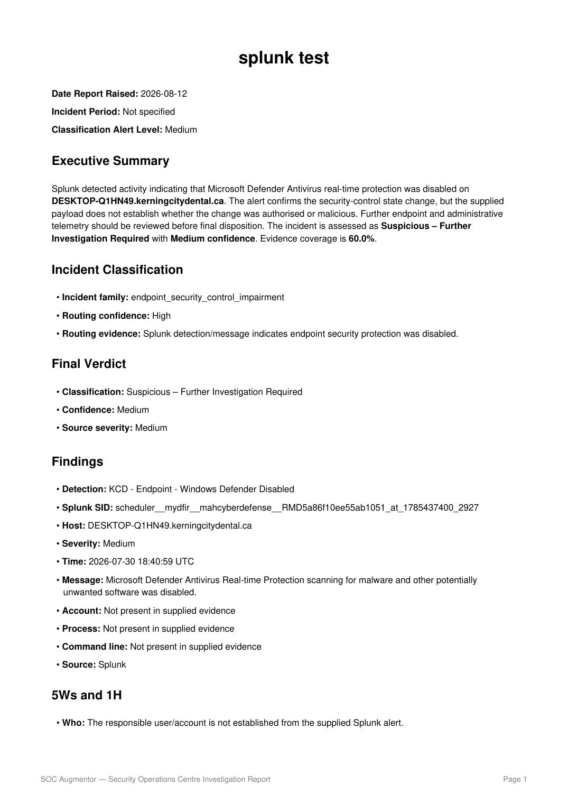

Outputs
Professional reports with explicit evidence boundaries
Reports are designed to communicate both the alert findings and the limits of what the supplied evidence can prove. The current Splunk report records that the application did not have direct access to historical Splunk searches, Windows logs, Defender Operational logs or Sysmon, and then lists the investigation required to resolve those gaps.

V7.3.3 generated KCD Splunk report